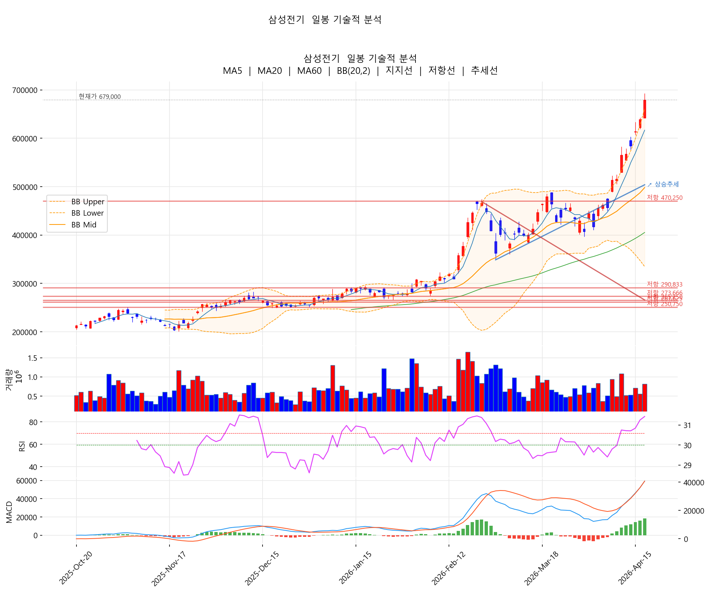

[4월 13일 마감 리뷰] 대형주 전반 조정, 고려아연 +5.19% 두드러진 강세
한줄 요약
코스피 5,808.62 (-0.86%), 코스닥은 +0.57% 혼조 마감. 미·이란 협상 대기 속 관망세가 짙어진 하루로 30종목 중 25종목 하락. 다만 외국인은 4일 연속 순매수를 이어갔고, 지수는 6,000선 재돌파 분위기 속에서 5,800선 부근 정체 구간을 보였습니다.
📰 시황 분석 — 미·이란 협상 대기 속 관망
① 지수: 코스피 -0.86%, 코스닥 +0.57% 혼조
- 코스피 5,808.62 (-50.25P), 5,800선에서 가까스로 마감
- 코스닥은 +0.57% 상승해 대형주 약세를 일부 상쇄
- 약세 섹터: 건설·항공
② 환율: 원·달러 1,489.3원 — 중동發 패닉 심리 안정 국면
- 장중 한때 1,480원 육박했으나 1,489원선에서 마감
- "미·이란 노딜 충격 과했나···원·달러 환율, 1480원대 마감" (서울파이낸스)
- 환율 부담이 일부 해소되며 외국인 매수세 유지에 우호적 환경
③ 외국인: 4일 연속 순매수, 일주일 200조 매수 — '바이 코리아' 지속
- "돌아온 외국인, 다시 반도체로…코스피 6000 재돌파 시동 걸까" (조선일보)
- "다시 '바이 코리아'…외국인, 일주일 새 코스피서 덩치 200조 불려" (뉴시스)
- 오늘 지수 약세에도 불구하고 외국인 매수 흐름은 유지
④ 대외 변수: 미·이란 협상 앞두고 뉴욕증시 혼조
- "뉴욕증시, 미·이란 협상 대기 속 혼조 마감" (다음)
- "美·이란 협상 앞두고 경계심…혼조 마감" (연합인포맥스)
- 호르무즈 해협 봉쇄 우려는 잔존 → 정유·해운·철강에 부담
주요 헤드라인 (4/13 KST)
• [코스피 마감] 50.25P(0.86%) 내린 5808.62 — 서울파이낸스
• 코스피 0.86% 하락한 5808.62 마감…건설·항공 약세 — 글로벌이코노믹
• 원·달러 환율 1489.3원 마감…중동發 패닉 심리 다소 안정 — 다음
• 외국인 4일 연속 '사자'…코스피 주간 최대 순매수 — 다음
• 다시 '바이 코리아'…외국인, 일주일 새 코스피서 덩치 200조 불려 — 뉴시스
• 돌아온 외국인, 다시 반도체로…코스피 6000 재돌파 시동 걸까 — 조선일보
오늘 시장의 본질: 펀더멘털 악재가 아니라 미·이란 협상 결과를 기다리는 관망세가 핵심입니다. 외국인은 매수 흐름을 이어가는 가운데 개인·기관이 차익 실현에 나서며 대형주 위주로 조정. 5,800선이라는 심리적 지지선은 지켰지만 6,000선 재돌파를 위한 동력은 아직 부족한 상황입니다. 건설·항공·반도체장비처럼 개별 악재가 있는 섹터가 약세를 주도했습니다.
주요 종목 등락 현황 (2026-04-13 종가 기준)
상승 마감 종목
| # | 종목 | 종가 | 등락률 | 5일 | 20일 |
|---|---|---|---|---|---|
| 1 | 고려아연 | 1,663,000 | +5.19% | +12.29% | +3.94% |
| 2 | 한화에어로스페이스 | 1,530,000 | +1.53% | +5.52% | +3.66% |
| 3 | KT | 63,000 | +1.45% | +4.65% | +6.96% |
| 4 | SK하이닉스 | 1,040,000 | +1.27% | +17.38% | +6.78% |
| 5 | 삼성전기 | 568,000 | +0.53% | +22.94% | +37.53% |
| 6 | 삼성생명 | 235,000 | +0.21% | +3.98% | +10.85% |
하락 TOP 10
| 종목 | 종가 | 등락률 | 5일 | 20일 |
|---|---|---|---|---|
| 삼성물산 | 289,500 | -4.30% | +7.42% | +3.95% |
| 한미반도체 | 276,500 | -3.32% | +9.72% | -7.83% |
| 한국전력 | 42,200 | -2.76% | +4.84% | -10.02% |
| LG전자 | 115,300 | -2.62% | +5.39% | +0.96% |
| LG에너지솔루션 | 401,500 | -2.55% | -2.67% | +9.70% |
| POSCO홀딩스 | 360,000 | -2.44% | +3.15% | +7.95% |
| 삼성전자 | 201,000 | -2.43% | +4.09% | +6.52% |
| HMM | 21,150 | -2.31% | +5.22% | +0.95% |
| 셀트리온 | 195,200 | -2.25% | -0.31% | -2.40% |
| 현대차 | 478,500 | -2.25% | +2.03% | -5.43% |
섹터별 성적표
전 거래일(4/8) 폭등 직후, 어제 가장 많이 올랐던 섹터일수록 오늘 더 크게 빠지는 패턴이 나타났습니다.
| 순위 | 섹터 | 오늘 | 5일 | 20일 | 강세 / 약세 종목 |
|---|---|---|---|---|---|
| 1 | 비철금속 | +5.19% | +12.29% | +3.94% | 고려아연 +5.19% |
| 2 | 방산 | +1.53% | +5.52% | +3.66% | 한화에어로 +1.53% |
| 3 | AI부품·MLCC | +0.53% | +22.94% | +37.53% | 삼성전기 +0.53% |
| 4 | 통신 | +0.45% | +9.85% | +14.10% | KT +1.45% / SKT -0.54% |
| 5 | IT서비스 | 0.00% | -2.43% | -6.18% | 삼성SDS 0.00% |
| 6 | 금융 | -0.42% | +5.22% | +8.32% | 삼성생명 +0.21% / KB -1.07% |
| 7 | 반도체 | -0.84% | +9.58% | +4.48% | SK하이닉스 +1.27% / 삼성전자 -2.43% |
| 8 | 지주사 | -1.27% | +11.31% | +5.75% | SK -1.27% |
| 9 | 2차전지소재 | -1.38% | +1.66% | +12.19% | 포스코퓨처엠 -1.38% |
| 10 | 인터넷·플랫폼 | -1.48% | +2.96% | -7.54% | 카카오 -1.47% / NAVER -1.49% |
| 11 | 자동차 | -1.66% | -0.37% | -7.22% | 기아 -1.07% / 현대차 -2.25% |
| 12 | 2차전지 | -1.88% | -0.88% | +4.79% | 에코프로비엠 -1.24% / LG엔솔 -2.55% |
| 13 | 바이오 | -1.93% | -0.99% | -1.32% | 삼성바이오 -1.34% / 셀트리온 -2.25% |
| 14 | 해운 | -2.31% | +5.22% | +0.95% | HMM -2.31% |
| 15 | 철강 | -2.44% | +3.15% | +7.95% | POSCO홀딩스 -2.44% |
| 16 | 가전·전자 | -2.62% | +5.39% | +0.96% | LG전자 -2.62% |
| 17 | 유틸리티 | -2.76% | +4.84% | -10.02% | 한국전력 -2.76% |
| 18 | 반도체장비 | -3.32% | +9.72% | -7.83% | 한미반도체 -3.32% |
| 19 | 건설·상사 | -4.30% | +7.42% | +3.95% | 삼성물산 -4.30% |
섹터별 흐름 — 차익 실현의 흔적
🟢 강세 — 종목별 호재가 명확
비철금속 (+5.19%) · 고려아연 단독 강세
- "고려아연, MSCI ESG평가서 'A등급' 획득…2년 연속 등급 상향" (문화일보)
- "고려아연, 3번째 국가핵심기술 지정 기대…첨단·방위산업 첨병 역할" (마켓인)
- "베인은 팔았고 한화도 떠날 준비…LG·현대차의 고려아연 지분 향방은?" (인베스트조선)
- 장중 고가 1,688,000원으로 20일 고점(1,699,000)에 근접. ESG 등급 + 국가핵심기술 + 지분 향방까지 호재가 겹친 종목.
방산 (+1.53%) · 한화에어로 20일 신고가
- 장중 1,559,000원으로 20일 신고가 경신. 미·이란 협상 불확실성이 방산 수요 기대로 연결된 흐름.
통신 (+0.45%) · 방어주 매수
- KT +1.45%, SKT -0.54%. 시장 약세 속 전형적인 방어주 자금 이동.
🟡 혼조 — 외국인 매수 vs 개인·기관 차익 실현
반도체 (-0.84%) · "다시 반도체로" 흐름은 살아있음
- "돌아온 외국인, 다시 반도체로…코스피 6000 재돌파 시동 걸까" (조선일보)
- SK하이닉스 +1.27% (1,040,000원, 100만 원대 안착 유효)
- 삼성전자 -2.43%: "40만전자 가나"·"20만전자 깨졌을 때 사자" 등 약세 분위기 속 초고수 매수 헤드라인. 외국인 매수가 받아주고 있음에도 단기 매물 출회.
- "반도체 '슈퍼사이클 온기' 협력사로 퍼진다" (헤럴드경제) — 중장기 펀더멘털은 유효
금융 (-0.42%) · 누적 상승분 가벼운 되돌림
- 5일 +5.22%, 20일 +8.32%로 누적 상승이 컸던 만큼 KB금융(-1.07%) 중심 소폭 조정.
🔴 약세 — 종목별 악재가 명확한 곳
건설·상사 (-4.30%) · 건설 섹터 약세 직격
- "코스피 0.86% 하락…건설·항공 약세" (글로벌이코노믹) — 시황 헤드라인이 직접 지목한 약세 섹터
- 삼성물산은 EMS 해외 수출 협력 같은 호재성 뉴스가 있음에도 건설 섹터 전반 약세에 동반 하락.
반도체장비 (-3.32%) · 특허 분쟁 부담
- "한미반도체, 한화세미텍과 TC본더 특허 소송에 '강경 대응' 방침 공식화" (비즈니스포스트, 13일 11:46 KST)
- 특허 분쟁 장기화 우려가 단기 매도 압력으로 작용.
철강 (-2.44%) · 호르무즈 봉쇄 우려
- "호르무즈 해협 5월도 봉쇄면 감산 고려…POSCO홀딩스, 매수 유지" (다음, 4/9)
- 중동 협상 결과 따라 원자재·물류 비용 변동성이 부담 요인.
가전·전자 (-2.62%) · 내수 부진
- "삼성전자·LG전자 가전 양판점, 내수 부진 못 피했다" (전자신문, 13일)
- "LG전자, 경영 효율화…해외출장 이코노미로, 국내 회의 화상으로 대체" (이코노믹리뷰)
- 비용 절감 모드 진입은 수요 부진 신호로 해석되며 약세.
자동차 (-1.66%) · 누적 약세 지속
- 현대차 -2.25%, 기아 -1.07%. 5일 -0.37%, 20일 -7.22%로 누적 약세 흐름 계속.
2차전지 (-1.88%) · 호재성 뉴스에도 매물 출회
- "김동명 LG에너지솔루션 사장 'AX로 2028년 생산성 50% 높인다'" (조선일보) — 호재 발표
- 그럼에도 LG엔솔 -2.55%, 에코프로비엠 -1.24% 등 섹터 전반 매물 출회.
유틸리티 (-2.76%) · 직접 악재 없으나 누적 약세
- 한국전력 -2.76%. 헤드라인은 'AI 전면 적용', '에너지절약 캠페인' 등 중립 톤이지만, 20일 -10.02%로 누적 약세가 이어집니다.
📐 한 줄 요약
지수 차원의 큰 변동보다 섹터별·종목별 이슈가 두드러진 하루였습니다. 외국인은 매수 흐름을 유지(4일 연속, 일주일 200조)하고 있지만, 미·이란 협상 결과를 기다리는 관망세 속에서 건설(삼성물산)·반도체장비(한미반도체 특허분쟁)·가전(내수 부진) 같은 개별 악재가 있는 섹터가 시장 약세를 주도했습니다. 반대로 고려아연(ESG·국가핵심기술)·한화에어로(신고가 경신) 등 호재가 명확한 종목은 시장 약세를 거슬러 상승했습니다.
📈 차트로 보는 기술적 분석
각 차트에는 이동평균선(MA5/20/60), 볼린저밴드(20,2), 지지/저항선, 추세선, RSI(14), MACD가 함께 그려져 있습니다.
1. 삼성전기 (009150) — 정배열 유지, 단기 과열 구간 재진입

차트 해석: 20일 +37.53%로 누적 상승이 큰 종목. 오늘은 +0.53%로 소폭 마감했지만 RSI 72대와 볼린저 상단 돌파 조합은 단기 과열 신호입니다. 거래량 배수 0.76x로 매수세가 다소 약해진 점도 주목할 부분. 추격 매수보다 눌림목 대기가 안전합니다.
📍 핵심 가격대: 지지 524K(MA5) → 465K(MA20) → 430K대(박스 상단). 저항 583K(60일 고점) → 600K(심리 저항).
2. SK하이닉스 (000660) — 안정적 정배열, 100만 원 안착 유효

차트 해석: 5종목 중 가장 안정적인 추세. RSI가 중립 구간이라 추가 상승 여력이 남아있고 단기 과열 신호는 없습니다. 5일 +17.38%로 꾸준한 상승 흐름이 유지되는 점이 긍정적. 거래량은 0.63x로 다소 가벼운 수준.
📍 핵심 가격대: 지지 1,003K(MA5) → 950K(MA20) → 901K(MA60). 저항 1,095K(BB 상단) → 1,099K(60일 고점).
3. KB금융 (105560) — 조정 구간 진입

차트 해석: 정배열 자체는 유지되고 있지만 오늘 -1.07% 음봉으로 MA5(154K)에 근접한 상태. MA5/20/60이 좁은 간격으로 수렴해 있어 이 지지선 유지 여부가 단기 방향성을 결정할 구간입니다.
📍 핵심 가격대: 지지 154K(MA5) → 151K(MA20) → 148K(MA60). 저항 159K(BB 상단) → 162K → 172K(60일 고점).
4. 한화에어로스페이스 (012450) — 장중 20일 신고가 경신

차트 해석: 장중 고가 1,559,000원으로 20일 고가를 새로 경신했습니다. RSI 64대는 아직 과열 전 단계, 볼린저 상단(1,560K)에 밀착한 상태. MA5/20/60 모두 정배열을 유지하고 MACD는 골든크로스 상태입니다. 60일 고점까지의 여유는 약 +8%.
📍 핵심 가격대: 지지 1,502K(MA5) → 1,396K(MA20) → 1,324K(MA60). 저항 1,560K(BB 상단·20일 고점) → 1,655K(60일 고점).
5. LG에너지솔루션 (373220) — 정배열 회복 직후 조정

차트 해석: MA20과 MA60이 거의 붙어있던 구간에서 간신히 정배열을 회복했으나, 오늘 -2.55% 음봉으로 MA5(410K)를 이탈했습니다. 볼린저 위치 59.4%는 밴드 중앙부에 해당해 추가 하락 여지가 남아있습니다. 거래량 0.56x로 매수세 유입도 약합니다.
📍 핵심 가격대: 지지 395K(MA20·MA60 클러스터) → 363K(BB 하단). 저항 410K(MA5) → 428K(BB 상단) → 455K(60일 고점).
종목별 매매 전략
★★★★ SK하이닉스 — 안정적 추세 유지
| 분할 진입 | 1,000,000~1,015,000원 |
| 1차 목표 | 1,095,000원 (BB 상단) |
| 2차 목표 | 1,150,000원 |
| 손절 | 950,000원 |
★★★★ 한화에어로스페이스 — 신고가 경신, 추세 유효
| 분할 진입 | 1,490,000~1,510,000원 (눌림목) |
| 1차 목표 | 1,655,000원 |
| 2차 목표 | 1,750,000원 |
| 손절 | 1,395,000원 |
★★★ 삼성전기 — 과열 구간, 눌림목 대기
| 분할 진입 | 524,000~540,000원 (조정 시) |
| 1차 목표 | 583,000원 |
| 2차 목표 | 620,000원 |
| 손절 | 495,000원 |
★★★ KB금융 — MA5 지지 확인 필요
| 관망 후 진입 | 154,000원 지지 확인 시 |
| 1차 목표 | 162,000원 |
| 손절 | 148,000원 |
★★ LG에너지솔루션 — 단기 약세, 관망
| 재진입 검토 | 395,000원 (MA20 지지 확인 시) |
| 1차 목표 | 428,000원 |
| 손절 | 363,000원 |
주의해야 할 종목
- 한국전력 (-2.76%, 20일 -10.02%) — 20일 신저가(39,650원)에 근접. 추세 반전 신호가 나오기 전까지 관망 권장.
- 한미반도체 (-3.32%, 20일 -7.83%) — 단기 모멘텀 약화. 5일 +9.72% 반등폭이 오늘 -3.32%로 되돌려진 상태.
- 삼성물산 (-4.30%) — 오늘 가장 큰 하락 폭. 다만 5일·20일은 여전히 상승 구간으로, 단기 되돌림 성격인지 추세 전환인지 추가 확인 필요.
다음 거래일 (4월 14일) 체크포인트
- SK하이닉스 100만 원 지지 유지 여부 — 무너지면 반도체 섹터 전체 조정 가능성
- 삼성전기 520K대 지지 — MA5 지지 확인으로 과열 구간 해소 여부 판단
- 한화에어로 1,560K 돌파 지속성 — 장중 신고가 뒤 다음 날 종가가 핵심
- 고려아연 상승세 연속성 — 20일 고점(1,699K) 돌파 시도 여부
- 미국 증시 마감 흐름 — 오늘 밤 나스닥·S&P500 흐름이 내일 기술주 방향성에 영향
핵심 정리
상승 섹터: 비철금속(고려아연) > 방산(한화에어로) > 통신(KT)
하락 섹터: 건설(삼성물산) > 반도체 장비(한미반도체) > 유틸리티(한국전력)
시장 분위기: 차익 실현 매물 우세 (30종목 중 25종목 하락)
관심 종목: SK하이닉스(안정), 한화에어로(신고가), 삼성전기(과열 주의)